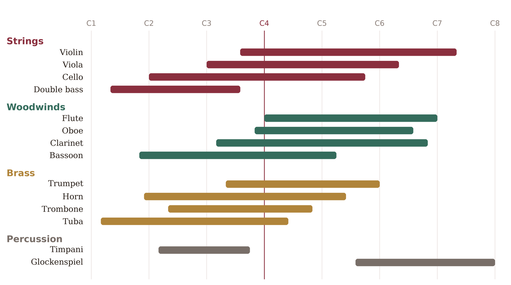

This appendix collects, in one place, the practical ranges of the instruments we have discussed — the same information as the chart in Chapter 31, given here as tables you can look up at a glance. Two reminders before the numbers. First, a range tells you only what is possible; for what sounds good, stay in the middle and treat the extremes as special effects (Chapter 33). Second, several instruments transpose — they sound at a different pitch than written (Chapter 32) — so for those the concert (sounding) range and the written range differ; both are given below. Pitches use scientific notation, where middle C is C4.

Strings
All non-transposing except the double bass, which sounds an octave lower than written (so its music is written an octave high to stay on the staff).
| Instrument | Concert range | Notes |
|---|---|---|
| Violin | G3 – E7 | brilliant on top; the workhorse melody instrument |
| Viola | C3 – E6 | a fifth below the violin; warm, dark middle |
| Cello | C2 – A5 | rich and deep, but eloquent and singing up high |
| Double bass | E1 – G3 (sounding) | written an octave higher; the true bass foundation |
Woodwinds
The flute, oboe, and bassoon are non-transposing. The clarinet shown here is the common B♭ instrument, which sounds a major 2nd lower than written.
| Instrument | Concert range | Notes |
|---|---|---|
| Flute | C4 – C7 | weak at the very bottom; bright and clear on top |
| Oboe | B♭3 – G6 | reedy and penetrating; a natural for plaintive melodies |
| Clarinet (B♭) | D3 – B♭6 (sounding) | written E3 – C7; wide range, distinct registers (Chapter 33) |
| Bassoon | B♭1 – E♭5 | the bass of the woodwinds; also a characterful tenor |
Brass
The trumpet and horn here are the common transposing instruments (B♭ trumpet, F horn); the trombone and tuba read at concert pitch in bass clef.
| Instrument | Concert range | Notes |
|---|---|---|
| Trumpet (B♭) | E3 – C6 (sounding) | written F♯3 – D6; brilliant and commanding |
| Horn (F) | B1 – F5 (sounding) | written a perfect 5th higher; noble, blending |
| Trombone | E2 – B♭4 | concert pitch; weighty and grand |
| Tuba | D1 – F4 | concert pitch; the deep brass foundation |
Percussion (pitched)
| Instrument | Concert range | Notes |
|---|---|---|
| Timpani | D2 – A3 | tuned drums; the orchestra’s bass punctuation |
| Glockenspiel | G5 – C8 (sounding) | written two octaves lower; bright, bell-like sparkle |
Transposition at a glance
For the transposing instruments, to write a desired sounding pitch, write it as shown (this repeats the table from Chapter 32):
| Instrument | Sounds relative to written | To get concert pitch, write… |
|---|---|---|
| Piccolo | an octave higher | an octave lower |
| Clarinet / Trumpet in B♭ | a major 2nd lower | a major 2nd higher |
| Clarinet in A | a minor 3rd lower | a minor 3rd higher |
| Horn / English horn in F | a perfect 5th lower | a perfect 5th higher |
| Alto saxophone (E♭) | a major 6th lower | a major 6th higher |
| Double bass, Contrabassoon | an octave lower | an octave higher |
In practice, let MuseScore handle all of this: compose with Concert Pitch toggled on so you read and write at sounding pitch, and let the program produce correctly transposed parts for the players (Chapter 32). These tables are for when you need to check a limit by hand, or read a score away from the computer.